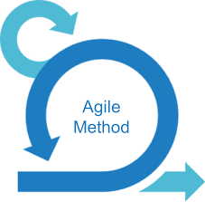
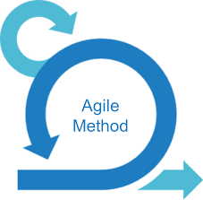

In 2020, I began studying at the "Inter-American Open University" in the university career of Computer Systems Engineering. This career consists of 5 years and an intermediate title of
Systems Analyst.
I am currently finishing the third year of my degree, with 25 subjects passed and an average of 8.
Then I will teach you certain knowledge acquired in this institution:


 
